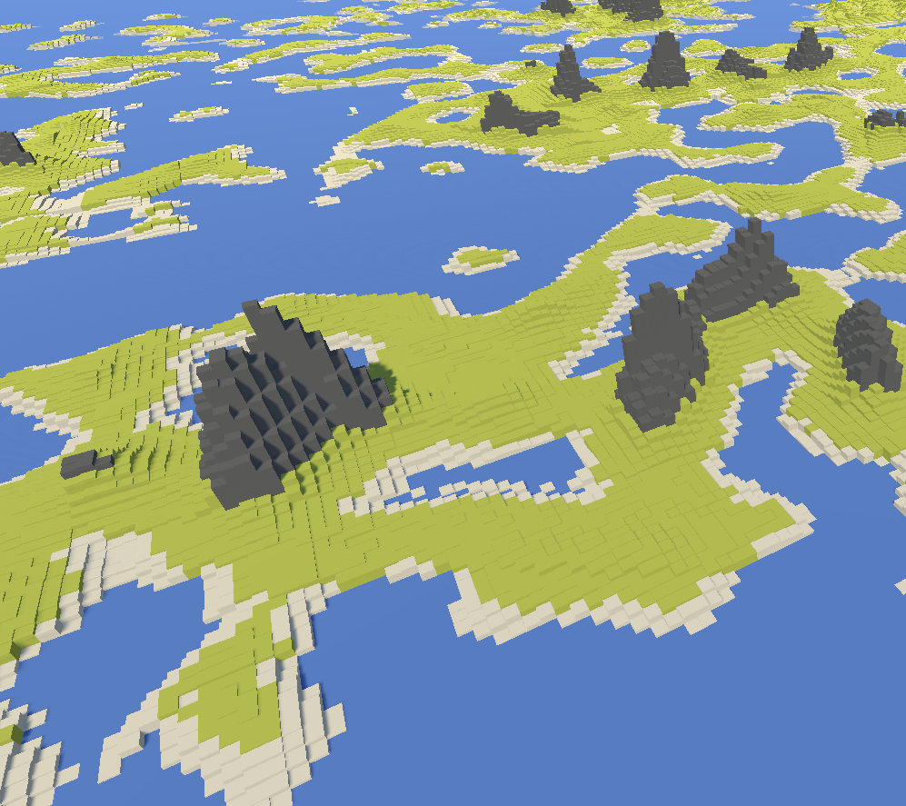

<!DOCTYPE html>
<html lang="en">
<head>
    <meta charset="UTF-8">
    <meta http-equiv="X-UA-Compatible" content="IE=edge">
    <meta name="viewport" content="width=device-width, initial-scale=1.0">
    <title>Document</title>
    <link rel="stylesheet" href="css/style.css">
</head>
<body>
</body>
</html>
<div id="header">
    <header>
        <h2>Othello</h2>
        <div></div>
    </header>
    <nav id="link_list" class="link_list_closed">
        <ul id="links">
            <li><a id="start" class="header_link" href="index.html">Start</a></li>
            <li>
                <a id="games" class="header_link" href="games.html">
                    Games
                    <a id="othello" class="hide" href="othello.html"><p>Othello</p></a>
                    <a id="terrain" class="hide" href="#"><p>Terrain</p></a>
                </a>
            </li>
            <li><a id="contact" class="header_link" href="contact.html">Contact</a></li>
        </ul>
    </nav>
</div>

<div id="game_grid">
    <h1 id="game_title">Terrain Project</h1>
    <p id="game_paragraph_1">
        Welcome to the world of my terrain project, a game that is currently in development and is set to revolutionize the way players experience open-world gameplay. One of the most exciting features of this project is its advanced random terrain generation, which promises to create a virtually infinite number of unique and challenging environments for players to explore.
    </p>
    
    <p id="game_paragraph_2">
        At the heart of this game is a powerful procedural generation engine that generates terrain based on a series of complex algorithms. This means that every time you play, the game world will be different, offering a fresh and unpredictable experience every time. <br> <br>

        Players will be able to explore a vast, open-world environment that is filled with a diverse range of terrains, from towering mountain ranges to sprawling grasslands, dense forests, and sprawling deserts. The terrain itself will be full of natural hazards such as rivers, cliffs, and rocky outcrops, which will challenge players to think creatively and use their skills to overcome obstacles.
    </p>
    <div id="game_quote"><h2>"This teqnuique is unlike everything."</h2><p>- Gabriel Wingård</p></div>
    <a id="game_git_link" href="#"><p>Check out the github repo here!</p></a>  

</div>

<div id="burger_menu">
    <div id="burger_line_1"></div>
    <div id="burger_line_2"></div>
</div>

<script src="js/app.js"></script>
</body>